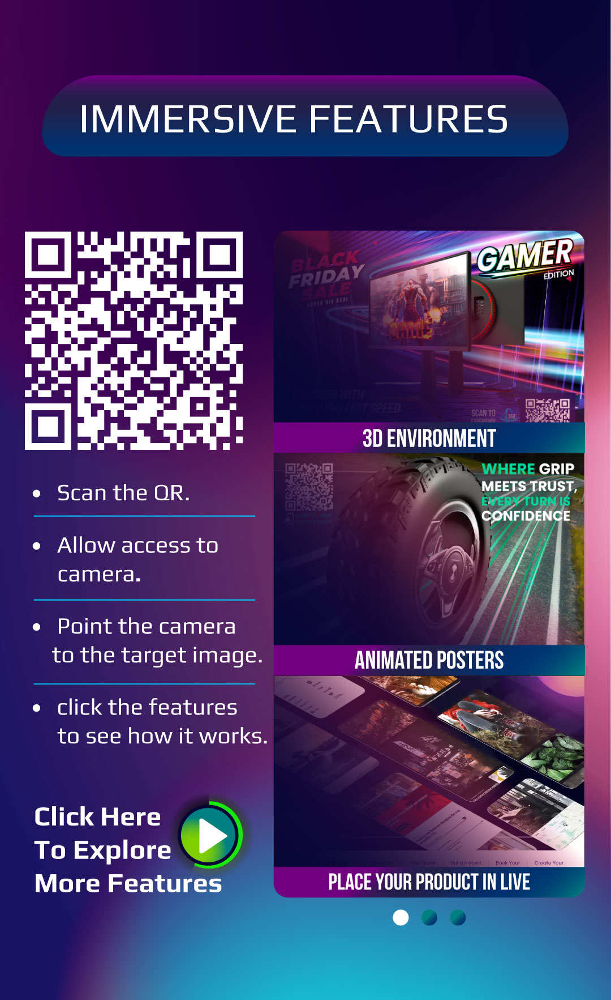

<html>

<head>
  <meta name="viewport" content="width=device-width, initial-scale=1" />
  <script src="https://aframe.io/releases/1.6.0/aframe.min.js"></script>
   <script src="./js/mindar-image.prod.js"></script>
  <script src="./js/mindar-image-aframe.prod.js"></script>
 
  <!-- use for the animation (animation-mixer) -->
  <script src="https://cdn.jsdelivr.net/gh/c-frame/aframe-extras@7.5.0/dist/aframe-extras.min.js"></script>
  <!-- use for the green screen transparency -->
  <script src="https://unpkg.com/aframe-chromakey-material/dist/aframe-chromakey-material.min.js"></script>
  

  <style>
    #example-scanning-overlay {
      display: flex;
      align-items: center;
      justify-content: center;
      position: absolute;
      left: 0;
      right: 0;
      top: 0;
      bottom: 0;
      background: transparent;
      z-index: 2;
    }

    @media (min-aspect-ratio: 1/1) {
      #example-scanning-overlay .inner {
        width: 50vh;
        height: 50vh;
      }
    }

    @media (max-aspect-ratio: 1/1) {
      #example-scanning-overlay .inner {
        width: 80vw;
        height: 80vw;
      }
    }

    #example-scanning-overlay .inner {
      display: flex;
      align-items: center;
      justify-content: center;
      position: relative;

      background:
        linear-gradient(to right, white 10px, transparent 10px) 0 0,
        linear-gradient(to right, white 10px, transparent 10px) 0 100%,
        linear-gradient(to left, white 10px, transparent 10px) 100% 0,
        linear-gradient(to left, white 10px, transparent 10px) 100% 100%,
        linear-gradient(to bottom, white 10px, transparent 10px) 0 0,
        linear-gradient(to bottom, white 10px, transparent 10px) 100% 0,
        linear-gradient(to top, white 10px, transparent 10px) 0 100%,
        linear-gradient(to top, white 10px, transparent 10px) 100% 100%;
      background-repeat: no-repeat;
      background-size: 40px 40px;
    }

    #example-scanning-overlay.hidden {
      display: none;
    }

    #example-scanning-overlay img {
      opacity: 0.6;
      width: 90%;
      align-self: center;
    }

    #example-scanning-overlay .inner .scanline {
      position: absolute;
      width: 100%;
      height: 10px;
      background: white;
      animation: move 2s linear infinite;
    }

    @keyframes move {

      0%,
      100% {
        top: 0%
      }

      50% {
        top: calc(100% - 10px)
      }
    }
  </style>

  <script type="module" src="./js/main.js"></script>
</head>

<body>
  <!-- <div id="example-scanning-overlay">
      <div class="inner">
         	  
         	  
      <div class="scanline"></div> // need to remove comment this..
      </div>
    </div> -->
  <a-scene
    mindar-image="imageTargetSrc: ./assets/target.mind; filterMinCF:0.0001; filterBeta: 0.01;"
    vr-mode-ui="enabled: false" device-orientation-permission-ui="enabled: false">
    <a-assets>
      <a-asset-item id="bluetoothSpeakerObject" src="./assets/glb/bluetooth-speaker-plane.glb"></a-asset-item>
      
      <video id="lightGrowVideo" src="./assets/video/rock-on.mp4"  loop playsinline></video>
      <video id="growVideo" src="./assets/video/bridging.mp4"  loop  playsinline></video>
      <video id="spiralVideo" src="./assets/video/glow 1.mp4"  loop  playsinline></video>
    </a-assets>

    <a-camera position="0 0 0" look-controls="enabled: false" cursor="fuse: false; rayOrigin: mouse;"
      raycaster="far: 10000; objects: .clickable"></a-camera>
    <a-entity business-card mindar-image-target="targetIndex: 0" id="targetEntity">
        <a-gltf-model  
          anchored="persistent: true" 
          rotation="90 0 0" 
          position="0 0 0" 
          scale="0.1 0.1 0.1"
          src="#bluetoothSpeakerObject" 
          class="clickable"
          animation-mixer
        >
        </a-gltf-model>

    </a-entity>
  </a-scene>

  <!-- <a id="ar-link" rel="ar" href="./assets/glb/New Project 2.reality">  
    
  </a> -->
</body>

</html>